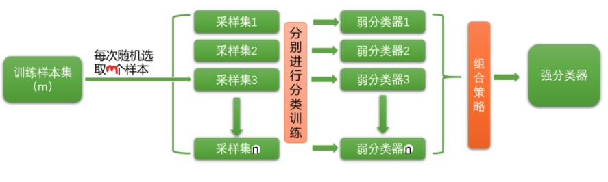
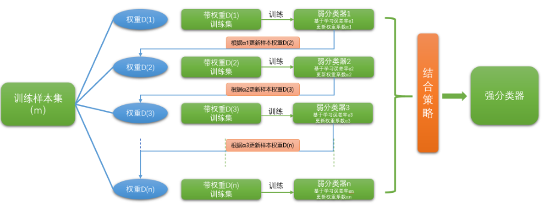

bagging方法的代表算法是随机森林，准确的来说，随机森林是bagging的⼀个特化进阶版，所谓的特化是因为随机森林的弱学习器都是决策树。所谓的进阶是随机森林在bagging的样本随机采样基础上，⼜加上了特征的随机选择，其基本思想没有脱离bagging的范畴。分类树组成的森林就叫做随机森林分类器，回归树所集成的森林就叫做随机森林回归器。
什么是集成算法和bagging？——
集成算法
对于训练集数据，我们通过训练若⼲个弱评估器，通过⼀定的结合策略，就可以最终形成⼀个强评估器，这个强分类器的效果就是汇总之前多个模型的结果，来获取最优的表现结果。
它可以⽤来做市场营销模拟的建模，统计客户来源，保留和流失，也可⽤来预测疾病的⻛险和病患者的易感性。
Bagging
原理：每次均匀地、有放回地随机选取与原数据集样本量相等的样本，得到若干个新数据集。再用若干个若评估器分别训练这些数据集，最终对每个评估器预测的结果根据平均或多数表决原则选取最优的预测结果。

一、随机森林分类器
通过构造多个决策树，做bagging以提高泛化能力
有哪些随机方法
1. 重要参数
1.1 控制基评估器的参数
| 参数 | 含义 |
|---|---|
| criterion | 不纯度的衡量指标，有基尼系数和信息熵两种选择 |
| max_depth | 树的最大深度，超过最⼤深度的树枝都会被剪掉 |
| min_samples_leaf | ⼀个节点在分枝后的每个⼦节点都必须包含⾄少min_samples_leaf个训练样本，否则分枝就不会发⽣ |
| min_samples_split | ⼀个节点必须要包含⾄少min_samples_split个训练样本，这个节点才允许被分枝，否则分枝就不会发⽣ |
| max_features | max_features限制分枝时考虑的特征个数，超过限制个数的特征都会被舍弃，默认值为总特征个数开平⽅取整 |
| min_impurity_decrease | 限制信息增益的⼤⼩，信息增益⼩于设定数值的分枝不会发⽣ |
1.2 n_estimators
森林中树⽊的数量，即基评估器的数量。这个参数对随机森林模型的精确性影响是单调的，n_estimators越⼤，模型的效果往往越好。但是达到⼀定的程度之后，随机森林的精确性往往不再上升或开始波动，并且，n_estimators越⼤，需要的计算量和内存也越⼤，训练的时间也会越来越⻓。对于这个参数，目标是尽量在训练难度和模型效果之间取得平衡。
1.3 random_state
sklearn中的分类树DecisionTreeClassifier自带随机性，所以随机森林中的树天⽣就都是不⼀样的。分类树中的参数数random_state是 从最重要的特征中随机选择出⼀个特征来进⾏分枝，因此每次⽣成的决策树都不⼀样。随机森林⽤法和分类树中相似，只不过在分类树中，⼀个random_state只
控制⽣成⼀棵树，⽽随机森林中的random_state控制的是⽣成森林的模式，⽽⾮让⼀个森林中有⼀
棵树。
1 | #随机森林中的random_state控制的是⽣成森林的模式 |
当我们需要成千上万棵树的时候，数据不⼀定能够提供成千上万的特征来让我们构筑尽量多尽量不同的树。因此，除了random_state。我们还需要其他的随机性，比如max_features。
Boosting
给每一个训练样本赋予一个等量的初始权重，在每一轮训练结束时自动地调整权重。
